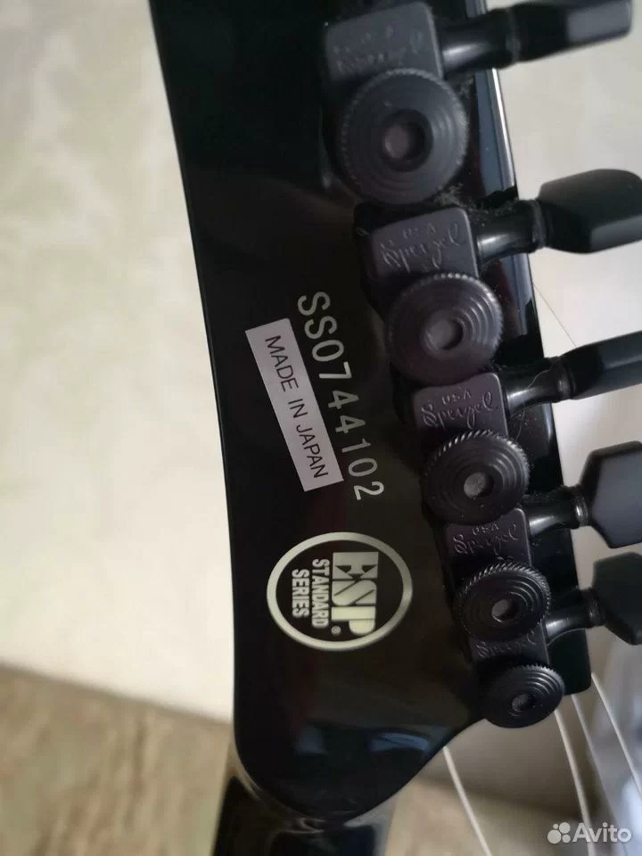

Founded in Tokyo in 1975 by Hisatake Shibuya, ESP (Electric Sound Products) is a premier manufacturer of high-performance electric guitars and basses, renowned for its strong ties to heavy metal and hard rock. Originally a replacement parts manufacturer, ESP gained prominence in the 1980s through custom-shop instruments for artists like George Lynch and Metallica. (How to decode a ESP serial #)
Note: If you try a serial number and the decoder is not able to decode it, please contact us and let us know so we can check the number and fix the decoder. Thank you!
A quick manual method when you don't want to use a decoder.
ESP guitar serial numbers are generally found on the back of the headstock, with formats varying by era and factory. Modern ESP/LTD models typically use a 7-digit code where the first two digits indicate the year (e.g., “15” for 2015). Other formats include letters for the month (A=Jan, B=Feb) or factory codes (E, R, U) for earlier 2000s Korean models.
Decoding ESP/LTD Serial Numbers
Modern Models (Approx. 2004–Present): Format is typically 7 digits (e.g., W15XXXXX). The first two digits are generally the year of production (e.g., 15XXXXX = 2015, 22XXXXX = 2022). The first letter indicates the factory (e.g., “W” for World Musical Instruments, Korea; “E” or “K” for others).
Early 2000s (LTD): Format often uses 6 digits starting with letters like E, R, or U. These are often sequential, but the first two digits are not necessarily the year.
Pre‑1998/1999: Serial numbers may be found on the end of the fretboard rather than the back of the headstock.
Important Nuances
Month of Manufacture: In some configurations, a letter at the start represents the month (A=Jan, B=Feb, …, L=Dec).
Verification: For specific models (especially older or Japanese‑made), contacting ESP Customer Service with pictures of the headstock (front/back) and serial number is the best method to confirm details.
Common Serial Locations
Back of Headstock: Most common for modern models.
End of Fretboard: Used on older LTD models.
Neck Plate: Some models may have serials on the neck plate.

Example: headstock serial number.
Popular Kramer Guitars
Common Kramer models and series you might see on headstocks or listings.